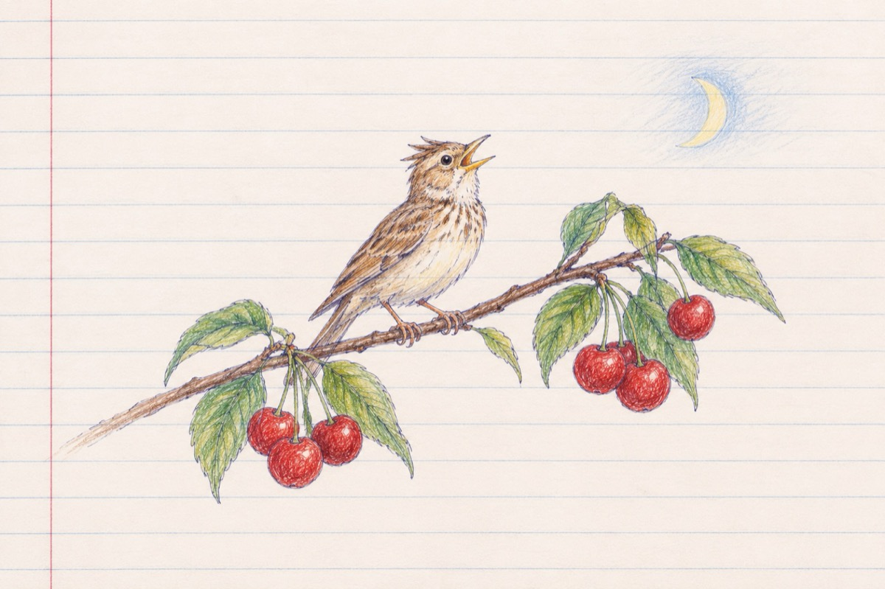

În fiecare seară
În fiecare seară în livadă
Pe-o creangă cu cireșe coapte
Ne face câte-o serenadă
Până târziu în noapte!
Cine să fie?
Mă întreabă nepoțelul
E micuță și frumoasă ciocârlie
Care își susține minunat concertul!
O vezi, David, privește, e cât o gămălie
Din ciocul ei cât o peniță
Cu-n repertoriu fără note și hârtie
Îi curge cântecul precum o apă lină din guriță!
Limbajul ei cum e și firescul
L-a tălmăcit pe strune de vioară
Celebrul compozitor "George Enescu"
Ciocârlia este și va fi vedetă mondială!
Vasile Groza